📋 Seleção do Dia
As notícias mais quentes do entretenimento brasileiro · 13 de junho de 2026 · Ir para BuzzPop
Conhecido como Vovô Anésio, influenciador ganhou projeção nas redes sociais.
O influenciador Anésio Fiori morreu aos 88 anos. Ele ficou conhecido como Vovô Anésio e também ganhou projeção como o “vovô do Brasil” nas redes sociais.
Chamado ainda de “vovô tiktoker”, Anésio viralizou ao mostrar momentos de sua rotina com o neto. As evidências não informam a causa da morte.
ID de aprovação: TW9ycmUgYW9zIDg4IGFu
Fontes: O Globo / G1 / CNN Brasil / UOL / InfoMoney
Link principal: O Globo
Crédito da imagem: Imagem pendente de revisão
Origem da imagem: Nenhuma candidata foi aprovada pela revisao visual automatica.

Crédito: Foto: © Reprodução
A audiência da abertura colocou Globo, SBT e CazéTV em comparação.
A abertura da Copa do Mundo colocou CazéTV, Globo e SBT em uma comparação de audiência. Globo e SBT também disputaram público no início da competição.
No primeiro dia do torneio, a Globo alcançou mais de 46 milhões de pessoas. A programação da Copa do Mundo também teve efeito nos índices de audiência das novelas da emissora, sem detalhes sobre os números.
ID de aprovação: Q2F6w6lUViwgR2xvYm8g
Fontes: Lance! / GE / VEJA / Notícias da TV / O Dia
Link principal: Lance!
Crédito da imagem: Foto: © Reprodução
Origem da imagem: Imagem ilustrativa aprovada por revisao visual e escolhida fora das fontes da noticia.

Crédito: Foto: Vovô Anésio (Reprodução: Instagram)
Influenciador ficou conhecido nas redes sociais ao mostrar a rotina com o neto. O velório será aberto ao público.
Vovô Anésio morreu aos 88 anos no interior de São Paulo. Conhecido nas redes sociais, ele viralizou ao mostrar a rotina ao lado do neto e foi apresentado como influenciador.
O velório de Vovô Anésio será realizado no interior paulista e ficará aberto ao público. Ele também era identificado como Anezio Fiori.
ID de aprovação: TW9ycmUgJ1ZvdsO0IEFu
Fontes: A Gazeta / G1 / R7 Entretenimento / CNN Brasil / VEJA
Link principal: A Gazeta
Crédito da imagem: Foto: Vovô Anésio (Reprodução: Instagram)
Origem da imagem: Imagem ilustrativa aprovada por revisao visual e escolhida fora das fontes da noticia.
Cantor levou a filha vestida com o uniforme da Seleção em dia de estreia do Brasil na Copa do Mundo.
Péricles levou a filha, vestida com o uniforme da Seleção Brasileira, para um show realizado no dia da estreia do Brasil na Copa do Mundo. A partida de estreia da equipe brasileira era contra o Marrocos.
O Brasil poderia ser ultrapassado pelo Marrocos no Ranking da Fifa em caso de derrota na estreia.
ID de aprovação: QnJhc2lsIHggTWFycm9j
Fontes: CNN Brasil / Gshow / UOL / GZH / O Globo
Link principal: CNN Brasil
Crédito da imagem: Imagem pendente de revisão
Origem da imagem: Nenhuma candidata foi aprovada pela revisao visual automatica.
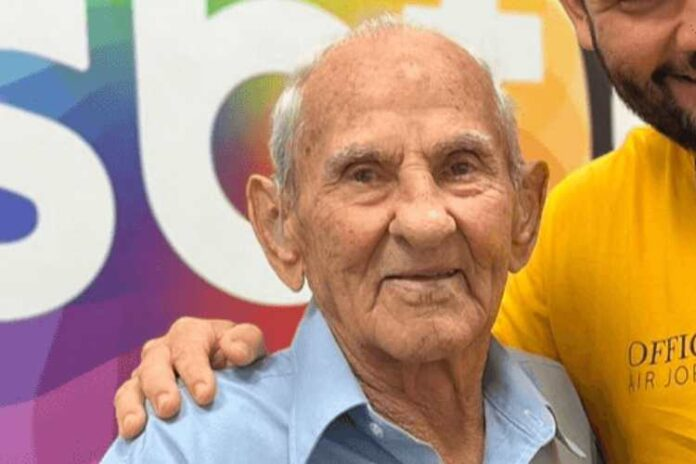
Crédito: Foto: Vovô Anésio (Reprodução: Instagram)
Influenciador morreu aos 88 anos após viralizar nas redes sociais com vídeos de sua rotina.
O influenciador Vovô Anésio morreu aos 88 anos no interior de São Paulo. Conhecido como “vovô tiktoker”, ele viralizou nas redes sociais ao mostrar sua rotina em vídeos, incluindo registros com o neto.
O velório de Vovô Anésio será realizado no interior paulista e ficará aberto ao público. A morte ocorreu neste sábado, 13 de junho.
ID de aprovação: Vm92w7QgQW7DqXNpbzog
Fontes: UOL / G1 / VEJA / InfoMoney / Midiamax
Link principal: UOL
Crédito da imagem: Foto: Vovô Anésio (Reprodução: Instagram)
Origem da imagem: Imagem ilustrativa aprovada por revisao visual e escolhida fora das fontes da noticia.
Virginia Fonseca recebeu flores no Dia dos Namorados e teve uma publicação comentada por Vini Jr.
Virginia Fonseca recebeu um buquê de rosas vermelhas no Dia dos Namorados. O presente também apareceu em uma publicação feita por ela nas redes sociais.
Vini Jr. reagiu à postagem de Virginia e deixou um comentário. As evidências disponíveis não informam quem enviou as flores nem detalham o conteúdo da manifestação do jogador.
ID de aprovação: QXDDs3MgYnVxdcOqIGRl
Fontes: Notícias da TV / UOL / Globo / CNN Brasil / VEJA
Link principal: Notícias da TV
Crédito da imagem: Imagem pendente de revisão
Origem da imagem: Nenhuma candidata foi aprovada pela revisao visual automatica.
Crédito: Foto: Atual estúdio do GloboNews. Foto: Reprodução
Canal reformulará a faixa matinal e prepara alterações no “Em Ponto” em meio à queda de audiência.
Às vésperas de completar 30 anos, a GloboNews planeja mudanças na programação para tentar recuperar audiência na TV paga. A reformulação inclui alterações na faixa matinal e no programa “Em Ponto”.
O canal também prepara o lançamento de um novo jornal. As medidas ocorrem em um período de queda nos índices de audiência da emissora.
ID de aprovação: R2xvYm9OZXdzIHBsYW5l
Fontes: gente.ig.com.br / UOL / Terra / Portal NTVB / RD1
Link principal: gente.ig.com.br
Crédito da imagem: Foto: Atual estúdio do GloboNews. Foto: Reprodução
Origem da imagem: Imagem ilustrativa aprovada por revisao visual e escolhida fora das fontes da noticia.
Grupo voltou aos palcos com uma turnê de reunião em estádios e anunciou uma apresentação extra.
O Kid Abelha encerrou o hiato e iniciou uma turnê nacional em estádios. A estreia aconteceu com o estádio lotado no Rio de Janeiro.
Após a primeira apresentação, o grupo anunciou um show extra da turnê de reunião. Paula Toller afirmou que o repertório terá um “setlist matador” e incluirá canções nunca tocadas pelo Kid Abelha em shows.
ID de aprovação: S2lkIEFiZWxoYSByZWFs
Fontes: Folha de S.Paulo / G1 / VEJA SÃO PAULO / O Dia / Ticketmaster Brasil
Link principal: Folha de S.Paulo
Crédito da imagem: Imagem pendente de revisão
Origem da imagem: Nenhuma candidata foi aprovada pela revisao visual automatica.
Banda iniciou uma turnê nacional de reunião em estádios após um período longe dos palcos.
O Kid Abelha anunciou um show extra da turnê de reunião após a estreia em um estádio lotado no Rio de Janeiro. A apresentação marcou o início de uma turnê nacional em estádios e a volta da banda aos palcos depois de um hiato.
Paula Toller afirmou que a série de shows terá um repertório forte e incluirá canções nunca tocadas anteriormente pela banda em apresentações ao vivo.
ID de aprovação: QXDDs3MgZXN0cmVpYSBs
Fontes: O Dia / Folha de S.Paulo / G1 / VEJA SÃO PAULO / Ticketmaster Brasil
Link principal: O Dia
Crédito da imagem: Imagem pendente de revisão
Origem da imagem: Nenhuma candidata foi aprovada pela revisao visual automatica.
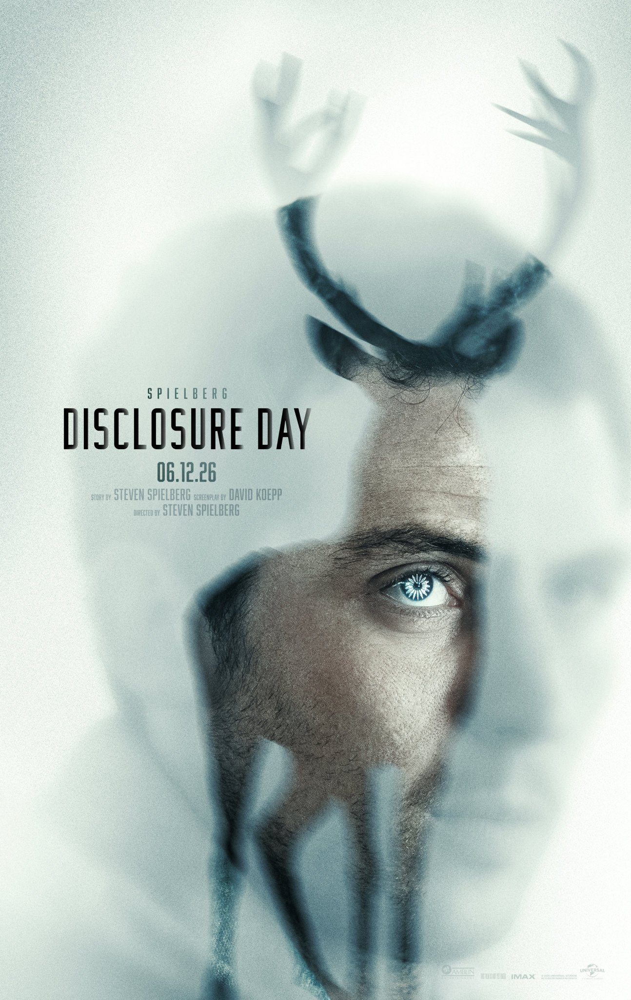
Crédito: Imagem ilustrativa: cinemacomrapadura.com.br
“Dia D”, produção sobre alienígenas, também estreou nos cinemas de Boa Vista.
“Dia D”, filme de Steven Spielberg sobre alienígenas, arrecadou US$ 12,5 milhões em sua estreia. O longa também estreou nos cinemas de Boa Vista.
Entre os elementos da produção está uma mensagem alienígena escondida, ligada ao desfecho da história e à explicação de seu final.
ID de aprovação: RGlhIEQgfCBGaWxtZSBk
Fontes: Omelete / Ingresso.com / AdoroCinema / VEJA / G1
Link principal: Omelete
Crédito da imagem: Imagem ilustrativa: cinemacomrapadura.com.br
Origem da imagem: Imagem ilustrativa aprovada por revisao visual e escolhida fora das fontes da noticia.
Fãs suspeitaram do uso de uma dublê no show, enquanto “Dai Dai” venceu votação sobre músicas das Copas.
A aparência de Shakira na abertura da Copa do Mundo de 2026 intrigou fãs, que levantaram a suspeita de que uma dublê teria sido usada no show. As informações disponíveis não confirmam que houve substituição da cantora.
Ao mesmo tempo, “Dai Dai”, música de Shakira, foi eleita a melhor canção das Copas do Mundo em uma votação de revista.
ID de aprovação: J0RhaSBEYWknLi4uIG1h
Fontes: O Globo / R7 / Estadão / CNN Brasil / Music Non Stop
Link principal: O Globo
Crédito da imagem: Imagem pendente de revisão
Origem da imagem: Nenhuma candidata foi aprovada pela revisao visual automatica.
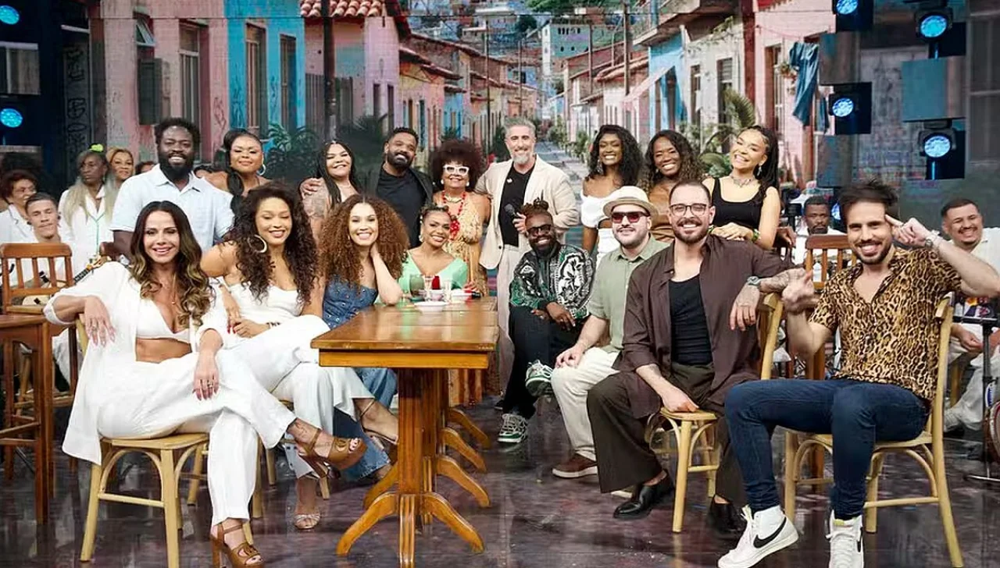
Crédito: Foto: Divulgação/Globo
Apresentador celebrou a temporada ao vivo e se arriscou na altinha durante a estreia.
Marcos Mion estreou uma versão ao vivo do Caldeirão em clima de Copa. O apresentador vibrou com a temporada especial do programa e definiu a experiência com a palavra “adrenalina”.
Na estreia do Churrascão do Mion na Copa, ele também se arriscou na altinha. A atração ainda debateu a vida amorosa de Vini Jr. e Virginia durante a transmissão ao vivo.
ID de aprovação: QW8gdml2bywgQ2FsZGVp
Fontes: Notícias da TV / Gshow / OFuxico / O TEMPO / CARAS Brasil
Link principal: Notícias da TV
Crédito da imagem: Foto: Divulgação/Globo
Origem da imagem: Imagem ilustrativa aprovada por revisao visual e escolhida fora das fontes da noticia.
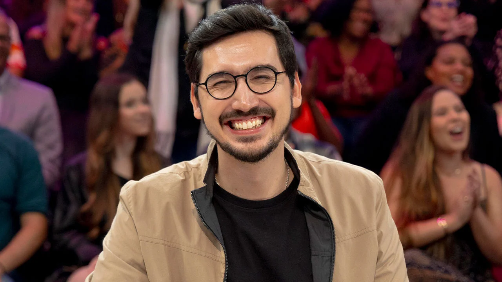
Crédito: Foto: Globo escala Nilson Klava como correspondente e promove rep\u00f3rter para o Em Ponto
Repórter da Globo se casou com uma mulher que é filha de jornalista.
O repórter Nilson Klava, apontado como o “crush” da Copa, se casou no Cristo Redentor com uma mulher que é filha de jornalista. Ele trabalha na Globo.
Klava atua como correspondente da emissora e ganhou destaque durante a cobertura da Copa nos Estados Unidos da América.
ID de aprovação: UmVww7NydGVyICdjcnVz
Fontes: Extra online / UOL / Jornal Correio / Boca do Rio Magazine / Alô Alô Bahia
Link principal: Extra online
Crédito da imagem: Foto: Globo escala Nilson Klava como correspondente e promove rep\u00f3rter para o Em Ponto
Origem da imagem: Imagem ilustrativa aprovada por revisao visual e escolhida fora das fontes da noticia.
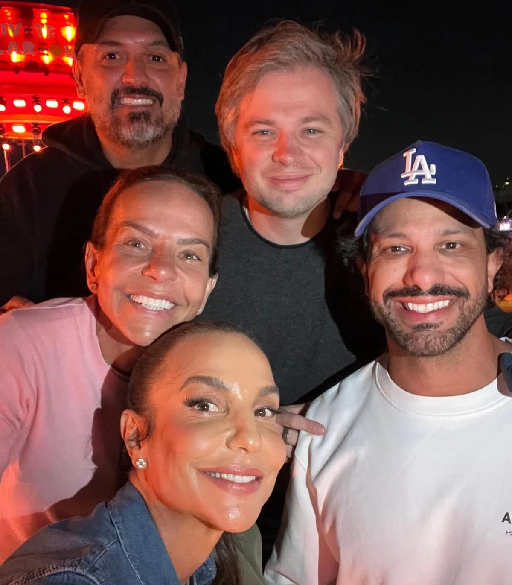
Crédito: Foto: Produtor Tiago Maia por Reprodução | Redes Sociais
Cantora teria comprado um anel da Cartier avaliado em R$ 33 mil para Tiago Maia.
Ivete Sangalo teria escolhido um anel de luxo como presente para Tiago Maia no primeiro Dia dos Namorados dos dois. O acessório seria um anel de compromisso de grife.
O item apontado é da Cartier e teria custado R$ 33 mil. A compra é tratada como possibilidade, sem confirmação definitiva nas informações apresentadas.
ID de aprovação: VmVqYSBvIHByZXNlbnRl
Fontes: Jornal Correio / Globo.com / band.com.br / Estrelando / CARAS Brasil
Link principal: Jornal Correio
Crédito da imagem: Foto: Produtor Tiago Maia por Reprodução | Redes Sociais
Origem da imagem: Imagem ilustrativa aprovada por revisao visual e escolhida fora das fontes da noticia.
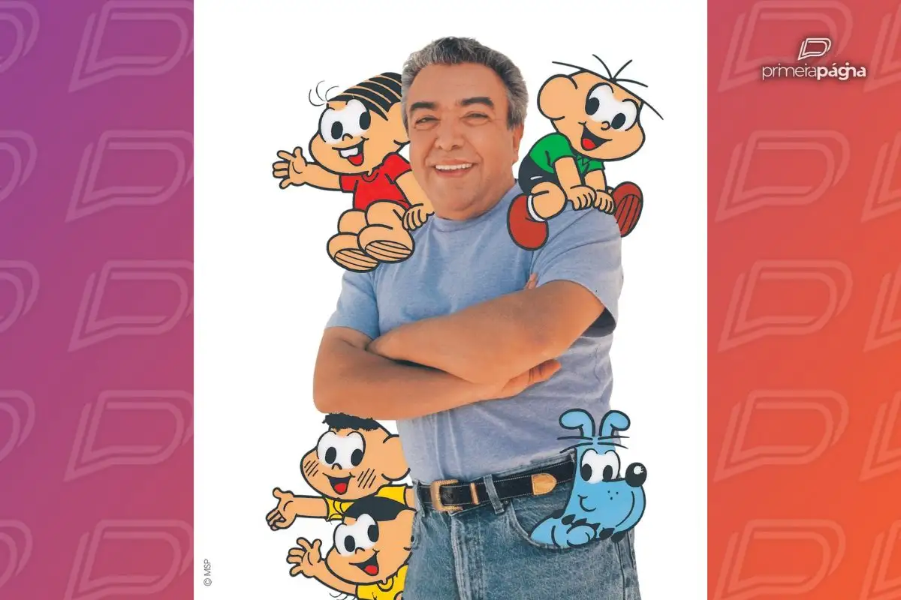
Crédito: Foto: Maurício de Sousa completa 90 anos. Reprodução/Instagram
Homenagem terá desfile no Anhembi, estátuas pela cidade e entrada gratuita.
Os 90 anos de Mauricio de Sousa serão celebrados com um desfile da Turma da Mônica no Sambódromo do Anhembi, em São Paulo. A entrada para o evento será gratuita.
A homenagem também terá estátuas de personagens espalhadas pela cidade e um banco de bronze na Avenida Paulista. As ações são promovidas pela Prefeitura de São Paulo para marcar o aniversário do criador da Turma da Mônica.
ID de aprovação: RGVzZmlsZSBkYSBUdXJt
Fontes: São Paulo para crianças / Prefeitura de São Paulo / G1 / Estadão / Meio e Mensagem
Link principal: São Paulo para crianças
Crédito da imagem: Foto: Maurício de Sousa completa 90 anos. Reprodução/Instagram
Origem da imagem: Imagem ilustrativa aprovada por revisao visual e escolhida fora das fontes da noticia.
Anezio Fiori, conhecido nas redes sociais como Vovô Anésio, morreu aos 88 anos. O velório será aberto ao público.
Anezio Fiori, conhecido nas redes sociais como Vovô Anésio, morreu aos 88 anos no interior de São Paulo. O influenciador também era chamado de “vovô tiktoker”.
Vovô Anésio viralizou ao mostrar sua rotina ao lado do neto. O velório será realizado no interior paulista e ficará aberto ao público.
ID de aprovação: w5psdGltbyBhZGV1cyBh
Fontes: Rádio Itatiaia / G1 / CNN Brasil / UOL / InfoMoney
Link principal: Rádio Itatiaia
Crédito da imagem: Imagem pendente de revisão
Origem da imagem: Nenhuma candidata foi aprovada pela revisao visual automatica.
A nova etapa da trama terá o retorno de Heitor e a chegada da personagem Lyris.
A segunda fase de “Quem Ama Cuida” terá o retorno de Heitor. O personagem provoca uma virada na trama de Adriana e faz Pilar cair em desgraça.
A nova etapa também apresenta Lyris. A personagem ajuda Adriana em sua vingança e se envolve com Ulisses. A possibilidade de Adriana viver um triângulo amoroso também é levantada na trama.
ID de aprovação: NSB2aXJhZGFzIGRhIDLC
Fontes: O TEMPO / CNN Brasil / Notícias da TV / Portal iG / Observatório da TV
Link principal: O TEMPO
Crédito da imagem: Imagem pendente de revisão
Origem da imagem: Nenhuma candidata foi aprovada pela revisao visual automatica.

Crédito: Imagem ilustrativa: aocuboagenciamento.com.br
Ator de Tiago em “Quem Ama Cuida” afirma que pensou em desistir da carreira durante o período sem trabalho.
Gui Ferraz, intérprete de Tiago em “Quem Ama Cuida”, relembrou uma fase de quase quatro anos sem trabalho. Durante esse período, o ator chegou a pensar em desistir da carreira.
Além da novela das 9, Gui Ferraz também integra a série “Brasil 70”, produção da Netflix sobre a Copa. O ator ganhou destaque pelos trabalhos nas duas produções.
ID de aprovação: RGVzZW1wcmVnYWRvIHBv
Fontes: Notícias da TV / Extra online / Correio Braziliense / NaTelinha
Link principal: Notícias da TV
Crédito da imagem: Imagem ilustrativa: aocuboagenciamento.com.br
Origem da imagem: Imagem ilustrativa aprovada por revisao visual e escolhida fora das fontes da noticia.
Cantora fará sua primeira apresentação ao vivo em mais de 15 anos.
Duffy reapareceu pela primeira vez em 15 anos e prepara seu retorno aos palcos. A apresentação será a primeira da cantora ao vivo em mais de 15 anos.
Duffy, cantora pop que teve sucesso nos anos 2000, foi vítima de estupro e sequestro antes do reaparecimento.
ID de aprovação: RXN0cmVsYSBwb3Agw6kg
Fontes: O Globo / nit.pt / cinemaecerveja.com.br / Portal Tela / Diário do Centro do Mundo
Link principal: O Globo
Crédito da imagem: Imagem pendente de revisão
Origem da imagem: Nenhuma candidata foi aprovada pela revisao visual automatica.
Pintor britânico era reconhecido pelo trabalho com luz, cor e cenas de ternura cotidiana.
O pintor britânico David Hockney morreu aos 88 anos. Considerado uma referência da arte contemporânea, o artista também foi reconhecido como mestre da luz e da cor.
Em sua produção artística, Hockney retratou a ternura como um fato cotidiano. Suas pinturas de piscinas também foram associadas a ambientes marcados por paixões movediças.
ID de aprovação: QW7DoWxpc2U6IERhdmlk
Fontes: Folha de S.Paulo / O Globo / Estadão / InfoMoney / Forbes Brasil
Link principal: Folha de S.Paulo
Crédito da imagem: Imagem pendente de revisão
Origem da imagem: Nenhuma candidata foi aprovada pela revisao visual automatica.
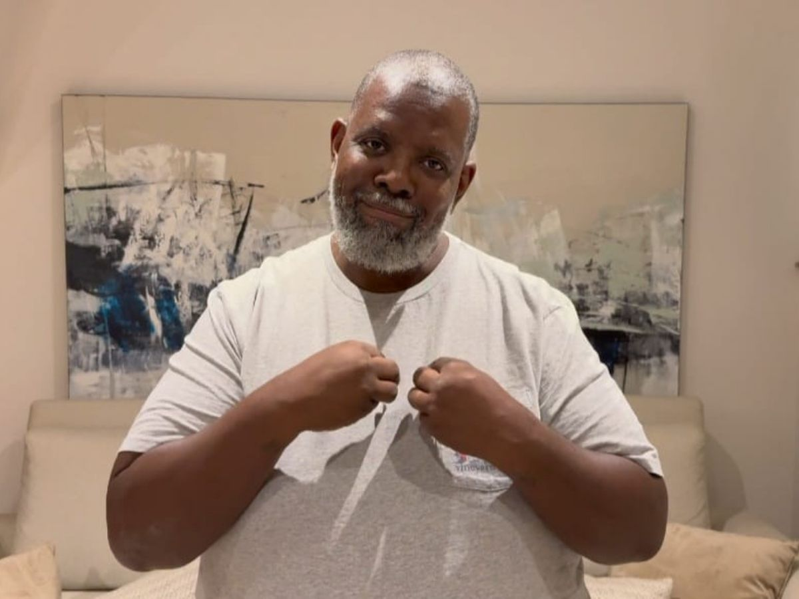
Crédito: Foto: Péricles envia homenagem em vídeo à Arlindo Cruz Divulgação: Assessoria do cantor
Cantor afirmou que o incentivo da esposa teve papel fundamental em seu processo de emagrecimento.
Péricles revelou que já perdeu quase 60 kg. O cantor também afirmou estar muito feliz com o resultado alcançado durante o processo de emagrecimento.
Ao falar sobre a perda de peso, Péricles destacou a ajuda da esposa. Ele disse que o incentivo dela foi fundamental para o resultado e que ela o estimula durante o processo.
ID de aprovação: UMOpcmljbGVzIGRpeiBx
Fontes: UOL / Globo.com / OFuxico / A Gazeta / CNN Brasil
Link principal: UOL
Crédito da imagem: Foto: Péricles envia homenagem em vídeo à Arlindo Cruz Divulgação: Assessoria do cantor
Origem da imagem: Imagem ilustrativa aprovada por revisao visual e escolhida fora das fontes da noticia.
Seleções incluem comédias românticas, clássicos relançados e filmes em cartaz.
O Dia dos Namorados tem seleções de filmes românticos, comédias românticas e clássicos do romance para assistir.
Em São Paulo, há títulos românticos em cartaz nos cinemas e clássicos com relançamento especial. Também há uma lista de cinco filmes para solteiros que querem fugir da data, além de uma seleção com 12 filmes românticos.
ID de aprovação: MTIgZmlsbWVzIHJvbcOi
Fontes: Capricho / Guia Folha / G1 / Estadão / Omelete
Link principal: Capricho
Crédito da imagem: Imagem pendente de revisão
Origem da imagem: Nenhuma candidata foi aprovada pela revisao visual automatica.
Esposa de Neymar aproveitou a Disney com as filhas antes da estreia do Brasil na Copa.
Bruna Biancardi aproveitou um passeio na Disney com as filhas. A esposa de Neymar e as crianças apareceram uniformizadas durante a visita ao parque, realizada antes da estreia do Brasil na Copa.
Em outro registro do passeio na Flórida, Bruna mostrou as filhas usando camisas em homenagem ao jogador. Enquanto elas curtiam a Disney, Neymar estava focado na Copa.
ID de aprovação: U2lsaWNvbmUsIGhhcm1v
Fontes: UOL / Gshow / Midiamax / purepeople.com.br / Lance!
Link principal: UOL
Crédito da imagem: Imagem pendente de revisão
Origem da imagem: Nenhuma candidata foi aprovada pela revisao visual automatica.
Atriz inspirou os movimentos da fada Sininho em “Peter Pan”, da Disney.
Margaret Kerry, nascida em 1929, morreu em 2026, aos 97 anos.
A atriz e dançarina serviu como modelo para Sininho em “Peter Pan”, clássico da Disney. O trabalho de Kerry foi usado como inspiração para os movimentos da fada no filme, ligando sua atuação à criação da personagem.
ID de aprovação: TW9ycmUgTWFyZ2FyZXRo
Fontes: Jornal Correio / Folha de S.Paulo / O Globo / Omelete / AdoroCinema
Link principal: Jornal Correio
Crédito da imagem: Imagem pendente de revisão
Origem da imagem: Nenhuma candidata foi aprovada pela revisao visual automatica.
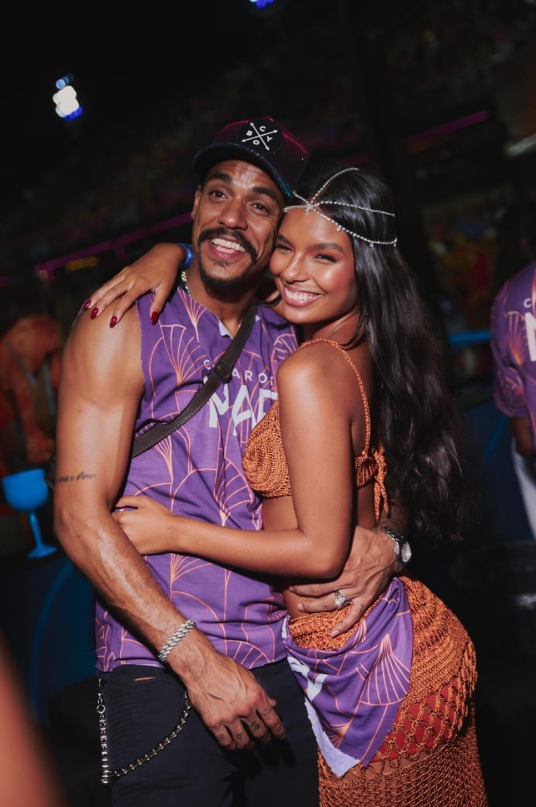
Crédito: Foto: Eles estão juntos há 5 meses – Foto: Reginaldo Teixeira/ Camarote Mar
Os atores falaram sobre os 17 anos de diferença no relacionamento.
Mell Muzzillo e Marcello Melo Jr. rebateram críticas relacionadas aos 17 anos de diferença de idade entre eles. Os atores afirmaram que essa diferença nunca foi um problema no relacionamento.
Ao responderem aos comentários, os dois disseram que as pessoas falam enquanto eles seguem juntos: “As pessoas falam e a gente faz amor”.
ID de aprovação: TWVsbCBNdXp6aWxsbyBl
Fontes: Portal UAI / Notícias da TV / O Dia / Alô Alô Bahia / Jornal Correio
Link principal: Portal UAI
Crédito da imagem: Foto: Eles estão juntos há 5 meses – Foto: Reginaldo Teixeira/ Camarote Mar
Origem da imagem: Imagem ilustrativa aprovada por revisao visual e escolhida fora das fontes da noticia.
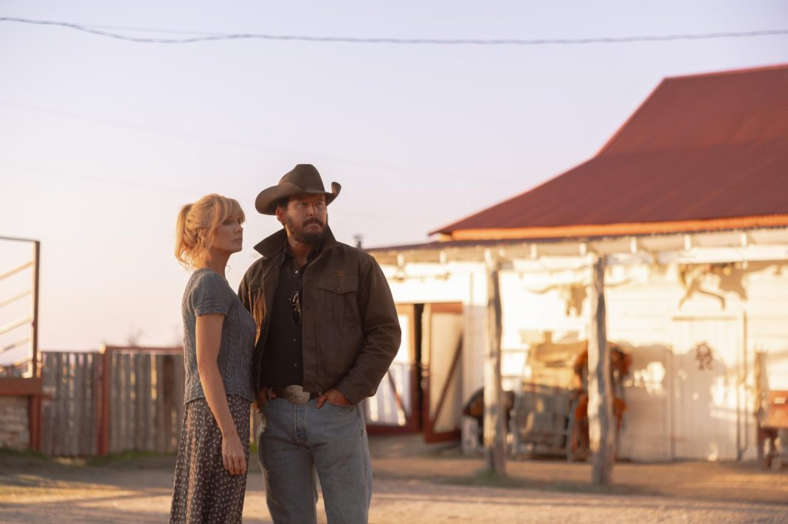
Crédito: Imagem ilustrativa: cinepop.com.br
Novo capítulo aumenta a tensão na série do universo de Yellowstone.
O sexto episódio de Rancho Dutton aumenta a tensão da trama e prepara a reta final da temporada. A produção faz parte do universo de Yellowstone.
A série também traz Beth e Rip de volta. Os dois personagens estão entre os favoritos dos fãs de Yellowstone.
ID de aprovação: UmFuY2hvIER1dHRvbjog
Fontes: Séries em Cena / Jovem Pan / Rolling Stone Brasil / AdoroCinema / cinemaecerveja.com.br
Link principal: Séries em Cena
Crédito da imagem: Imagem ilustrativa: cinepop.com.br
Origem da imagem: Imagem ilustrativa aprovada por revisao visual e escolhida fora das fontes da noticia.
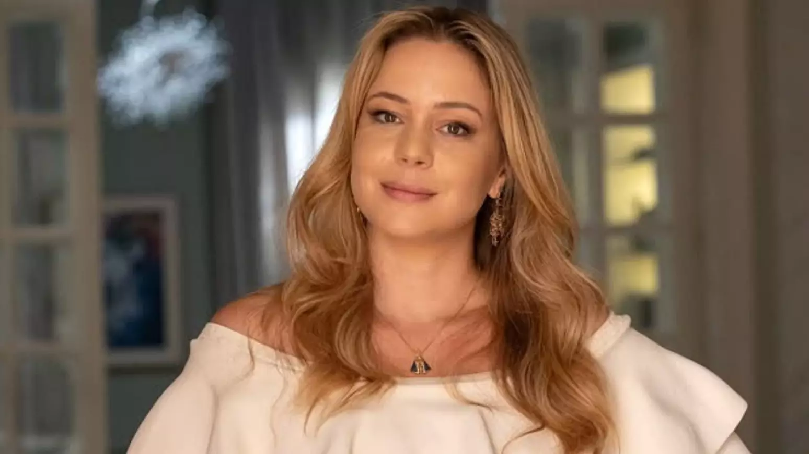
Crédito: Foto: Divulgação/TV Globo / Purepeople" width="112" height="116">
Atriz acredita que a personagem terá um final triste e não terminará rica.
Leandra Leal prevê que a vilã de “Coração Acelerado” terá um desfecho triste e receberá um castigo no fim da novela. A atriz afirmou que a personagem “não vai acabar rica”.
Ao revelar sua expectativa para o encerramento, Leandra também definiu a vilã como “amoral”.
ID de aprovação: TGVhbmRyYSBMZWFsIGZh
Fontes: O Globo / Notícias da TV / CARAS Brasil / observatoriodosfamosos.com.br / O TEMPO
Link principal: O Globo
Crédito da imagem: Foto: Divulgação/TV Globo / Purepeople" width="112" height="116">
Origem da imagem: Imagem ilustrativa aprovada por revisao visual e escolhida fora das fontes da noticia.
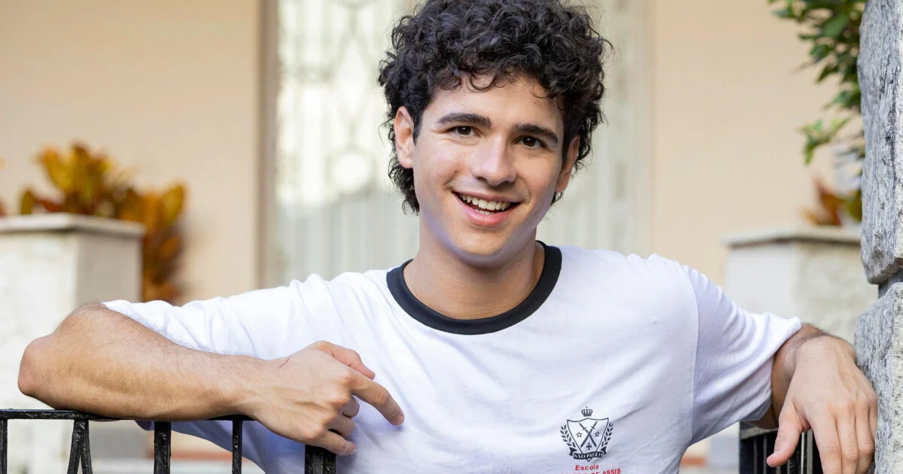
Crédito: Foto: Globo/Manoella Mello
João Victor Gonçalves, intérprete de Mau Mau, abordou sua sexualidade e o personagem gay da novela.
João Victor Gonçalves, intérprete de Mau Mau em “Quem Ama Cuida”, falou sobre sua sexualidade e revelou como a família reagiu. O ator também comentou a trajetória profissional e o trabalho na novela.
Na trama, Mau Mau passa por um processo de autodescoberta como gay e enfrenta homofobia. João Victor também relatou um caso real de homofobia que o inspira na novela.
ID de aprovação: TWF1IE1hdSBkZSBRdWVt
Fontes: Notícias da TV / O Globo / NaTelinha / purepeople.com.br / OFuxico
Link principal: Notícias da TV
Crédito da imagem: Foto: Globo/Manoella Mello
Origem da imagem: Imagem ilustrativa aprovada por revisao visual e escolhida fora das fontes da noticia.
Crédito: Foto: Reprodução/Globo" width="112" height="116">
Programa da Globo registrou crescimento de audiência e marcou a volta de Tadeu Schmidt ao trabalho.
O Central da Copa, da Globo, registrou crescimento de 66,3% no Ibope com Tadeu Schmidt. O apresentador apareceu barbudo no programa, que também contou com Fábio Porchat.
A atração marcou a volta de Tadeu ao trabalho em meio a perdas na família. Ao falar sobre o período, o apresentador afirmou que viveu o luto.
ID de aprovação: QmFyYnVkbywgVGFkZXUg
Fontes: Notícias da TV / UOL / Extra online / meutimao.com.br / PressReader
Link principal: Notícias da TV
Crédito da imagem: Foto: Reprodução/Globo" width="112" height="116">
Origem da imagem: Imagem ilustrativa aprovada por revisao visual e escolhida fora das fontes da noticia.
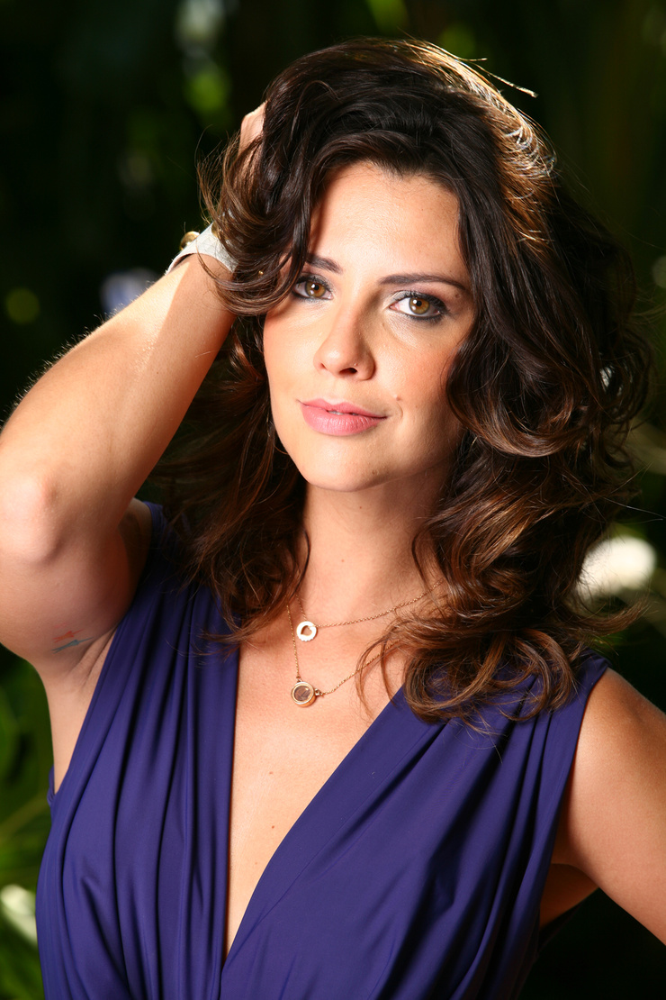
Crédito: Foto: Copyright/DMCA
Camila Rodrigues abordou a separação de Bruno Gagliasso e afirmou que ficou com boleto após o término.
Camila Rodrigues falou sobre o término de seu relacionamento com Bruno Gagliasso. Ao abordar a separação, ela afirmou: “Fiquei com boleto”.
A relação dos dois envolveu uma novela e um casamento relâmpago. Camila também expôs bastidores do fim do relacionamento sem mencionar o nome do ator nesse relato.
ID de aprovação: Q2FtaWxhIFJvZHJpZ3Vl
Fontes: DOL / VEJA / UOL / Globo / R7 Entretenimento
Link principal: DOL
Crédito da imagem: Foto: Copyright/DMCA
Origem da imagem: Imagem ilustrativa aprovada por revisao visual e escolhida fora das fontes da noticia.
Crédito: Foto: Leandra Leal em entrevista ao portal LeoDias (Reprodução portal LeoDias/ montagem)
Atriz acredita que a personagem não terminará rica e terá um desfecho marcado por castigo.
Leandra Leal prevê um final triste para a vilã de Coração Acelerado. A atriz acredita que a personagem receberá um castigo no desfecho da novela.
Ao falar sobre o destino da vilã, Leandra afirmou que ela não vai terminar rica. A atriz também definiu a personagem como “amoral” ao comentar o possível encerramento de sua trajetória.
ID de aprovação: TGVhbmRyYSBMZWFsIHBy
Fontes: Notícias da TV / O Globo / CARAS Brasil / Observatório dos Famosos / O TEMPO
Link principal: Notícias da TV
Crédito da imagem: Foto: Leandra Leal em entrevista ao portal LeoDias (Reprodução portal LeoDias/ montagem)
Origem da imagem: Imagem ilustrativa aprovada por revisao visual e escolhida fora das fontes da noticia.
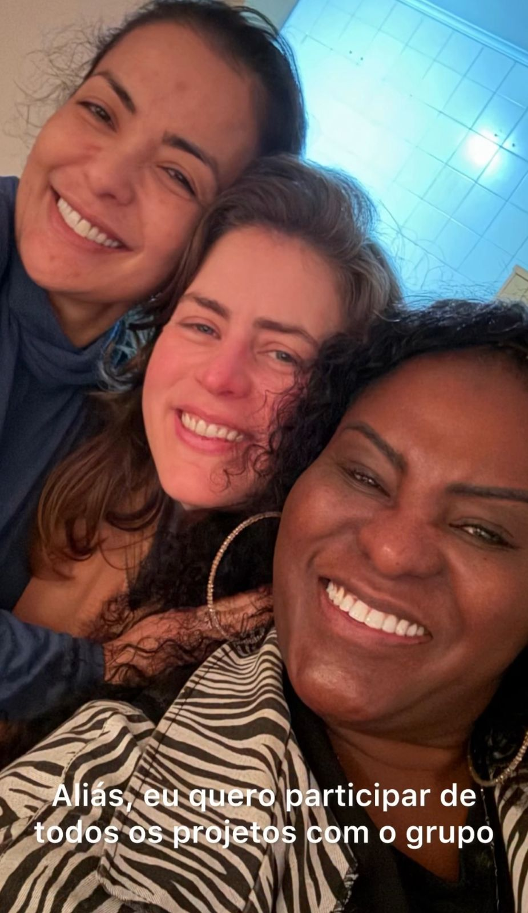
Crédito: Foto: Karin Hils celebrou aniversário de Lu Andrade (Foto/Instagram/@karinhils)
Ex-cantoras do Rouge trocaram farpas às vésperas de um documentário sobre o grupo.
Ex-cantoras do Rouge trocaram farpas às vésperas de um documentário. Karin Hils se pronunciou após um desabafo de Lu Andrade relacionado ao grupo.
Luciana Andrade também abordou sua saída do Rouge e esclareceu rumores sobre sua trajetória. Ao falar dos bastidores, afirmou que não brigava com ninguém e mencionou mentira e arrependimento.
ID de aprovação: w4BzIHbDqXNwZXJhcyBk
Fontes: Notícias da TV / OFuxico / POPline / R7 Entretenimento / gente.ig.com.br
Link principal: Notícias da TV
Crédito da imagem: Foto: Karin Hils celebrou aniversário de Lu Andrade (Foto/Instagram/@karinhils)
Origem da imagem: Imagem ilustrativa aprovada por revisao visual e escolhida fora das fontes da noticia.
Crédito: REPRODUÇÃO/INSTAGRAM
Lexa celebrou a gravidez de Tati Machado, anunciada após uma perda gestacional.
Tati Machado e Bruno Monteiro anunciaram uma nova gravidez. O anúncio ocorre após Tati ter perdido um bebê em uma gestação anterior.
Amiga de Tati, Lexa celebrou a notícia com a frase: “Já amo tanto esse baby”. Tati também foi surpreendida no Mais Você após anunciar que está grávida novamente.
ID de aprovação: QW1pZ2FzIHVuaWRhcyBh
Fontes: O Globo / NaTelinha / Midiamax / Diário Gaúcho / Veja Saúde
Link principal: O Globo
Crédito da imagem: REPRODUÇÃO/INSTAGRAM
Origem da imagem: Imagem ilustrativa aprovada por revisao visual e escolhida fora das fontes da noticia.
Uma prova na esteira colocou em disputa o cargo de Patrão.
Na Casa do Patrão, participantes enfrentaram um desafio de resistência em uma esteira durante a disputa pelo cargo de Patrão.
A atividade valia o posto descrito como o mais importante da competição. O resultado da prova não pode ser afirmado, pois Mari e Alexandre Vivão aparecem como vencedores sem indicação de que os títulos tratem da mesma edição.
ID de aprovação: UXVlbSBnYW5ob3UgYSBw
Fontes: Notícias da TV / OFuxico / O Universo da TV / ND Mais / Sobral Online
Link principal: Notícias da TV
Crédito da imagem: Imagem pendente de revisão
Origem da imagem: Nenhuma candidata foi aprovada pela revisao visual automatica.
Crédito: Foto: Mauricio de Sousa e Alice Takeda com os personagens da Turma da Mônica (Mauricio de Sousa Produções/Divulgação)
Homenagem aos 90 anos de Mauricio de Sousa terá desfile gratuito no Anhembi.
São Paulo terá um desfile da Turma da Mônica no Sambódromo do Anhembi em homenagem aos 90 anos de Mauricio de Sousa. A entrada será gratuita.
Estátuas dos personagens também serão instaladas em diferentes pontos da cidade. A programação inclui ainda um banco de bronze na Avenida Paulista.
ID de aprovação: U1AgY2VsZWJyYSBvYnJh
Fontes: UOL / G1 / São Paulo para crianças / Prefeitura de São Paulo / Estadão
Link principal: UOL
Crédito da imagem: Foto: Mauricio de Sousa e Alice Takeda com os personagens da Turma da Mônica (Mauricio de Sousa Produções/Divulgação)
Origem da imagem: Imagem ilustrativa aprovada por revisao visual e escolhida fora das fontes da noticia.
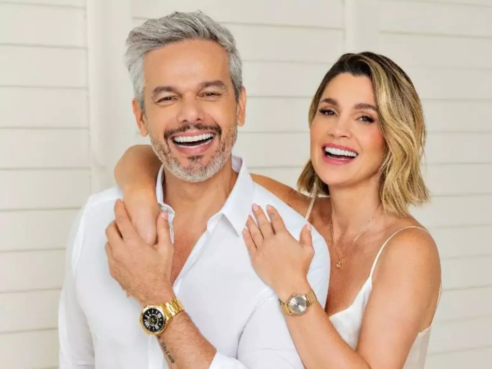
Crédito: Foto: Flávia Alessandra e Otaviano Costa Divulgação
Atriz explicou que passou a data separada do marido e relembrou o início da relação.
Flávia Alessandra passou o Dia dos Namorados longe de Otaviano Costa. Ao explicar a data separada do marido, ela afirmou que “não teve acordo” e que “a ficha só caiu hoje”.
A atriz também contou que os dois nunca namoraram. Flávia e Otaviano se casaram cinco meses depois de se conhecerem.
ID de aprovação: RmzDoXZpYSBBbGVzc2Fu
Fontes: Notícias da TV / Globo / O Dia / band.com.br / Alagoas Alerta
Link principal: Notícias da TV
Crédito da imagem: Foto: Flávia Alessandra e Otaviano Costa Divulgação
Origem da imagem: Imagem ilustrativa aprovada por revisao visual e escolhida fora das fontes da noticia.
Cantora apresentou o novo romance em registros publicados no Dia dos Namorados.
Paula Fernandes publicou as primeiras fotos com o novo namorado no Dia dos Namorados. Ao apresentar o novo amor, a cantora escreveu: “Eu e ele”.
O namorado de Paula Fernandes é piloto de avião. A publicação marcou a apresentação pública do novo romance da cantora, que até então ainda não havia exibido fotos do casal.
ID de aprovação: UGF1bGEgRmVybmFuZGVz
Fontes: CARAS Brasil / CNN Brasil / Globo / UOL / Isso É Notícia
Link principal: CARAS Brasil
Crédito da imagem: Imagem pendente de revisão
Origem da imagem: Nenhuma candidata foi aprovada pela revisao visual automatica.
Atriz afirmou que ela e Otaviano Costa nunca namoraram antes do casamento.
Flávia Alessandra revelou que se casou com Otaviano Costa cinco meses depois de conhecê-lo. Ao recordar o início da história dos dois, a atriz afirmou que eles nunca namoraram.
O casamento aconteceu poucos meses após o primeiro encontro, sem que os dois tivessem passado por um período de namoro. Flávia resumiu essa etapa da relação com a declaração: “Nunca namoramos”.
ID de aprovação: Q2FzYW1lbnRvIGVtIGNp
Fontes: O Dia / Notícias da TV / Globo.com / band.com.br / Alagoas Alerta
Link principal: O Dia
Crédito da imagem: Imagem pendente de revisão
Origem da imagem: Nenhuma candidata foi aprovada pela revisao visual automatica.
Narrador se defendeu e pediu empatia com os profissionais escolhidos para as transmissões.
Rômulo Mendonça foi afastado das transmissões das finais da NBA no Prime Video. O narrador se defendeu e afirmou que o conteúdo envolvido era um “podcast com humor”.
Após a suspensão, Rômulo e Bulgarelli se manifestaram e pediram empatia com os profissionais escolhidos para substituí-los nas transmissões das finais.
ID de aprovação: UsO0bXVsbyBNZW5kb27D
Fontes: UOL / CNN Brasil / Revista Oeste / Estadão / Lance!
Link principal: UOL
Crédito da imagem: Imagem pendente de revisão
Origem da imagem: Nenhuma candidata foi aprovada pela revisao visual automatica.
Virginia Fonseca recebeu flores no Dia dos Namorados, e Vini Jr. reagiu à publicação.
Virginia Fonseca recebeu flores no Dia dos Namorados. Registros mencionam rosas vermelhas e flores entregues enquanto ela estava na cama.
Vini Jr. reagiu à publicação de Virginia sobre o presente. Em um dos registros, a influenciadora aparece com um buquê avaliado em R$ 11 mil.
ID de aprovação: VmlyZ2luaWEgcGVyZGUg
Fontes: CNN Brasil / UOL / Rádio Itatiaia / VEJA
Link principal: CNN Brasil
Crédito da imagem: Imagem pendente de revisão
Origem da imagem: Nenhuma candidata foi aprovada pela revisao visual automatica.
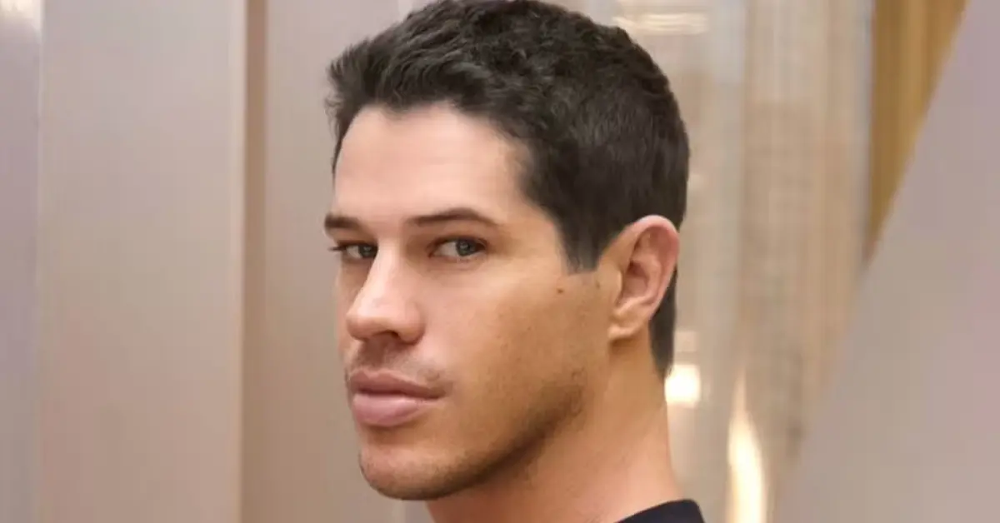
Crédito: Foto: José Loreto. Foto: Divulgação/Globo
Ator aparece com visual diferente como personagem ligado a Pilar na segunda fase da trama.
José Loreto aparece com um visual diferente para seu personagem em Quem Ama Cuida. O papel está relacionado à nova fase da história de Pilar na trama.
Na segunda fase, o personagem vivido pelo ator será o novo amor de Pilar e promete virar a cabeça dela. Uma foto mostra a caracterização adotada por Loreto para o papel.
ID de aprovação: Sm9zw6kgTG9yZXRvIG11
Fontes: Notícias da TV / O Globo / O TEMPO / Observatório dos Famosos / Observatório da TV
Link principal: Notícias da TV
Crédito da imagem: Foto: José Loreto. Foto: Divulgação/Globo
Origem da imagem: Imagem ilustrativa aprovada por revisao visual e escolhida fora das fontes da noticia.
A filha de Graciele Lacerda e Zezé Di Camargo retirou um nódulo do rosto e passou por uma biópsia.
A filha de Graciele Lacerda e Zezé Di Camargo, de um ano e cinco meses, passou por uma cirurgia para retirar um nódulo do rosto. A criança também realizou uma biópsia.
Graciele chorou ao comentar o procedimento e explicou o resultado do exame, sem detalhes disponíveis nas evidências. Após a cirurgia, Zezé mostrou a bebê.
ID de aprovação: R3JhY2llbGUgY2hvcmEg
Fontes: CNN Brasil / O Globo / Estadão / R7 Entretenimento / Correio Braziliense
Link principal: CNN Brasil
Crédito da imagem: Imagem pendente de revisão
Origem da imagem: Nenhuma candidata foi aprovada pela revisao visual automatica.
Tati Machado e Bruno Monteiro anunciaram uma nova gravidez.
Tati Machado e Bruno Monteiro anunciaram uma nova gravidez. Após o anúncio, Tati foi surpreendida com um buquê de flores durante o programa Mais Você.
Lexa celebrou a gravidez de Tati e afirmou que já ama o bebê. As duas são amigas e passaram por perdas gestacionais.
ID de aprovação: VGF0aSBNYWNoYWRvIMOp
Fontes: O Dia / O Globo / NaTelinha / Midiamax / Diário Gaúcho
Link principal: O Dia
Crédito da imagem: Imagem pendente de revisão
Origem da imagem: Nenhuma candidata foi aprovada pela revisao visual automatica.
O longa terá a presença do Hulk, chegará mais cedo e será o filme mais longo do herói.
Uma nova imagem de Homem-Aranha: Um Novo Dia mostra o Hulk ao lado de vilões. O personagem também estará presente no novo longa do Homem-Aranha, que teve sua chegada antecipada.
Homem-Aranha: Um Novo Dia será o filme mais longo do herói. A duração exata e a nova data de lançamento não foram informadas nas evidências disponíveis.
ID de aprovação: SG9tZW0tQXJhbmhhOiBV
Fontes: Omelete / einerd.com / Ingresso.com / canaltech.com.br / AdoroCinema
Link principal: Omelete
Crédito da imagem: Imagem pendente de revisão
Origem da imagem: Nenhuma candidata foi aprovada pela revisao visual automatica.
Ana Castela teve aspectos de sua intimidade expostos nas redes sociais por um influenciador, episódio que gerou polêmica.
Um influenciador expôs aspectos da intimidade de Ana Castela nas redes sociais. O episódio envolvendo a cantora gerou polêmica.
Após a exposição, Ana Castela bloqueou o ex-affair. As informações disponíveis não detalham quais aspectos da intimidade foram revelados nem apresentam declarações da artista sobre o caso.
ID de aprovação: QW5hIENhc3RlbGEgYmxv
Fontes: Portal Leo Dias / Bnews / Jornal de Brasília / contigo.com.br / Metrópoles
Link principal: Portal Leo Dias
Crédito da imagem: Imagem pendente de revisão
Origem da imagem: Nenhuma candidata foi aprovada pela revisao visual automatica.
Sequência iniciou as filmagens e teve sua primeira imagem divulgada.
Batman: Parte 2 começou as filmagens e ganhou sua primeira foto. O longa também já tem integrantes do elenco confirmados, embora os nomes não estejam detalhados nas informações disponíveis.
Os papéis de Sebastian Stan e Brian Tyree Henry ainda são tratados como possibilidades. Colin Farrell afirmou que o Pinguim aparecerá em apenas duas cenas de Batman 2.
Rumores também apontam para a possível chegada de vilões inéditos à sequência.
ID de aprovação: QmF0bWFuOiBQYXJ0ZSAy
Fontes: Omelete / UOL / Rádio Mix FM / band.com.br / Ingresso.com
Link principal: Omelete
Crédito da imagem: Imagem pendente de revisão
Origem da imagem: Nenhuma candidata foi aprovada pela revisao visual automatica.
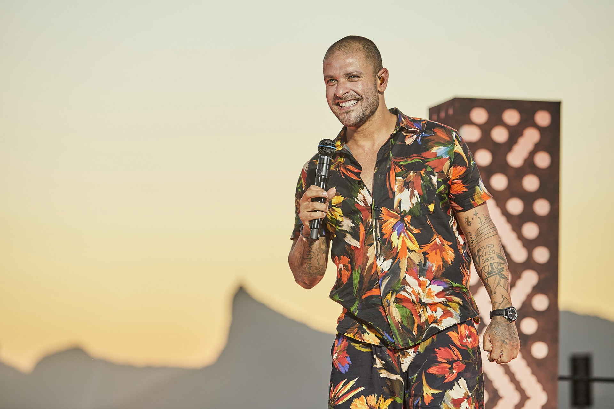
Crédito: Foto: Guto Costa / Divulgação)" loading="lazy">
Cantor também atualizou seu estado de saúde após uma laringite bacteriana e revelou o uso de aparelho para conseguir cantar.
Diogo Nogueira revelou estar com candidíase nas cordas vocais e explicou que está em tratamento. O cantor também atualizou seu estado de saúde após uma laringite bacteriana, problema que afetou sua voz.
O artista contou ainda que usou um aparelho para conseguir cantar. Após o problema de saúde, a voz de Diogo Nogueira chamou atenção durante uma participação no programa “Encontro”.
ID de aprovação: J0NhbmRpZMOtYXNlJyBu
Fontes: O Globo / VEJA / Revista Fórum / OFuxico / observatoriodosfamosos.com.br
Link principal: O Globo
Crédito da imagem: Foto: Guto Costa / Divulgação)" loading="lazy">
Origem da imagem: Imagem ilustrativa aprovada por revisao visual e escolhida fora das fontes da noticia.
Premiação reconhece nomes que geram impacto positivo no Brasil.
O Prêmio Faz Diferença homenageou Gilberto Gil e celebrou destaques de 2025. Promovida pela Firjan SESI e pelo O Globo, a premiação reconhece pessoas que geram impacto positivo no Brasil.
Afonso Borges conquistou o prêmio na categoria Livros. Debora Bloch foi reconhecida por interpretar Odete Roitman no remake de “Vale Tudo”, trabalho que classificou como um enorme desafio e uma grande responsabilidade.
ID de aprovação: UHLDqm1pbyBGYXogRGlm
Fontes: O Globo / Valor Econômico / Sistema Firjan / Rádio Itatiaia
Link principal: O Globo
Crédito da imagem: Imagem pendente de revisão
Origem da imagem: Nenhuma candidata foi aprovada pela revisao visual automatica.
Apresentadora foi surpreendida com um buquê no Mais Você e se emocionou.
Tati Machado e Bruno Monteiro anunciaram uma nova gravidez. Após a notícia, Tati foi surpreendida no Mais Você, ganhou um buquê e se emocionou. Ela afirmou estar muito feliz com a gestação.
Lexa também celebrou a gravidez de Tati e declarou que já ama muito o bebê. As duas passaram por perdas gestacionais.
ID de aprovação: VGF0aSBNYWNoYWRvIGdh
Fontes: CNN Brasil / O Globo / NaTelinha / Midiamax / Diário Gaúcho
Link principal: CNN Brasil
Crédito da imagem: Imagem pendente de revisão
Origem da imagem: Nenhuma candidata foi aprovada pela revisao visual automatica.
Crédito: Foto: Singulart | El mejor sitio para comprar arte on line - 2021 ©
Artista retratou a Califórnia, suas piscinas e cenas de ternura com luz e cores vibrantes.
O pintor britânico David Hockney morreu aos 88 anos. O artista ficou marcado por trabalhos que exploravam a luz e a cor, incluindo representações da Califórnia em tons vibrantes.
As piscinas também apareceram em sua produção artística, associadas a paixões movediças. Hockney ainda abordou a ternura como um elemento cotidiano em sua arte.
ID de aprovação: RGF2aWQgSG9ja25leSAo
Fontes: Folha de S.Paulo / Valor Econômico / Estadão / InfoMoney
Link principal: Folha de S.Paulo
Crédito da imagem: Foto: Singulart | El mejor sitio para comprar arte on line - 2021 ©
Origem da imagem: Imagem ilustrativa aprovada por revisao visual e escolhida fora das fontes da noticia.
A cantora recebeu flores de um admirador secreto e afirmou não gostar desse tipo de gesto.
Ana Castela recebeu um buquê de flores enviado por um admirador secreto no Dia dos Namorados. Ao falar sobre o presente, a cantora declarou: “Não gosto deste tipo de coisa”.
A identidade da pessoa que enviou as flores não foi revelada. Ana Castela também mencionou a possibilidade de ligar para um homem, afirmando que faria isso caso tivesse vontade.
ID de aprovação: QW5hIENhc3RlbGEgZ2Fu
Fontes: CNN Brasil / Globo.com / NaTelinha / Midiamax / Rádio Itatiaia
Link principal: CNN Brasil
Crédito da imagem: Imagem pendente de revisão
Origem da imagem: Nenhuma candidata foi aprovada pela revisao visual automatica.
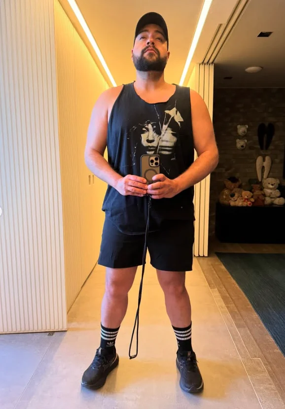
Crédito: Imagem ilustrativa: correio24horas.com.br
Artista falou sobre os comentários recebidos após emagrecer e afirmou que sempre se considerou bonito.
Tiago Abravanel falou sobre os elogios relacionados à sua aparência após perder mais de 20 kg nos últimos meses. Ao comentar as mudanças no corpo, ele rebateu o foco dado ao emagrecimento.
“Sempre me achei bonito”, afirmou Abravanel. O artista também mostrou o corpo ao abordar os comentários recebidos depois da perda de peso.
ID de aprovação: VGlhZ28gQWJyYXZhbmVs
Fontes: O Dia / Globo.com / UOL / CNN Brasil / D24AM
Link principal: O Dia
Crédito da imagem: Imagem ilustrativa: correio24horas.com.br
Origem da imagem: Imagem ilustrativa aprovada por revisao visual e escolhida fora das fontes da noticia.
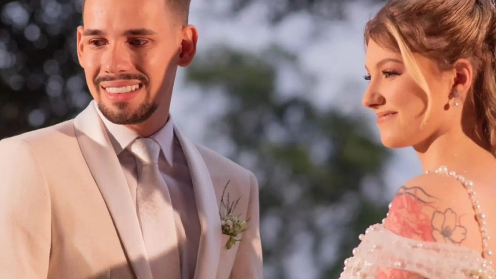
Crédito: Imagem ilustrativa: msn.com
Cinco meses após a morte da influenciadora, ele afirmou que pensa em se casar novamente.
O viúvo de Isabel Veloso afirmou que pensa em se casar com a atual namorada. Ele falou sobre os planos de casamento cinco meses após a morte da influenciadora.
A declaração ocorreu no Dia dos Namorados. Ele também disse querer que Arthur tenha uma figura feminina na vida dele.
ID de aprovação: VmnDunZvIGRlIElzYWJl
Fontes: Metrópoles / RedeTV! / D24AM / Jornal Correio / Mais Novela
Link principal: Metrópoles
Crédito da imagem: Imagem ilustrativa: msn.com
Origem da imagem: Imagem ilustrativa aprovada por revisao visual e escolhida fora das fontes da noticia.
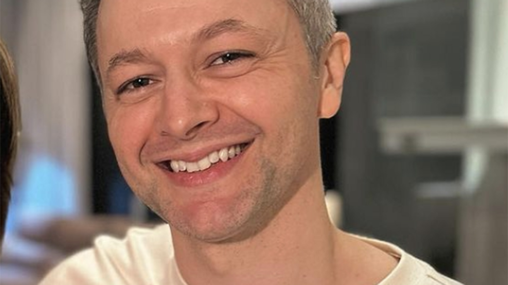
Crédito: Foto: Lucas Lima - Reprodução/Instagram
Lucas Lima esclareceu dúvidas de fãs após o término com Sandy e abordou boatos envolvendo a ex.
Lucas Lima respondeu a dúvidas de fãs sobre um rumor de casamento ou relacionamento com outro homem. O assunto foi abordado depois do término com Sandy.
Na mesma ocasião, Lucas também falou sobre boatos envolvendo Sandy e apresentou uma forma de evitá-los. Os detalhes dessa estratégia não foram informados.
ID de aprovação: THVjYXMgTGltYSByZXNw
Fontes: Hugo Gloss / Globo / CNN Brasil / NaTelinha / Observatório dos Famosos
Link principal: Hugo Gloss
Crédito da imagem: Foto: Lucas Lima - Reprodução/Instagram
Origem da imagem: Imagem ilustrativa aprovada por revisao visual e escolhida fora das fontes da noticia.
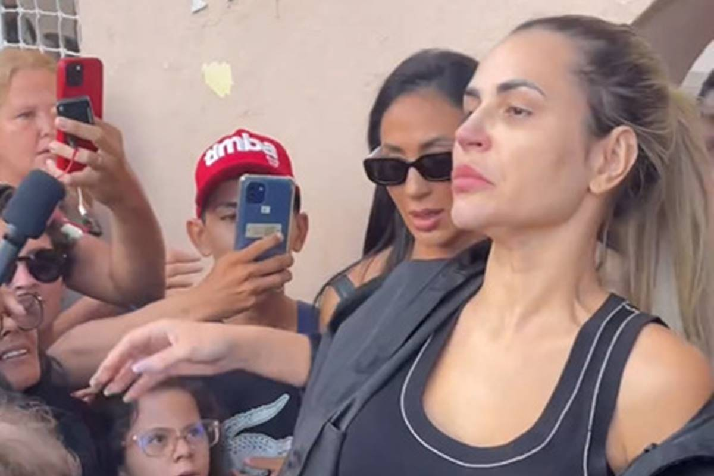
Crédito: Reprodução/Instagram
Órgão divulgou fotos do presídio após relatos da defesa sobre falta de higiene e escorpiões.
A secretaria responsável pelo presídio onde Deolane está presa negou que a cela tenha comida estragada e escorpião. O órgão também divulgou fotos da unidade após as denúncias.
A defesa de Deolane relatou falta de higiene e presença de escorpiões no local. As manchetes apresentam versões divergentes sobre as condições encontradas na unidade prisional.
ID de aprovação: U2VjcmV0YXJpYSBuZWdh
Fontes: UOL Notícias / G1 / Estadão / R7 / Midiamax
Link principal: UOL Notícias
Crédito da imagem: Reprodução/Instagram
Origem da imagem: Imagem ilustrativa aprovada por revisao visual e escolhida fora das fontes da noticia.
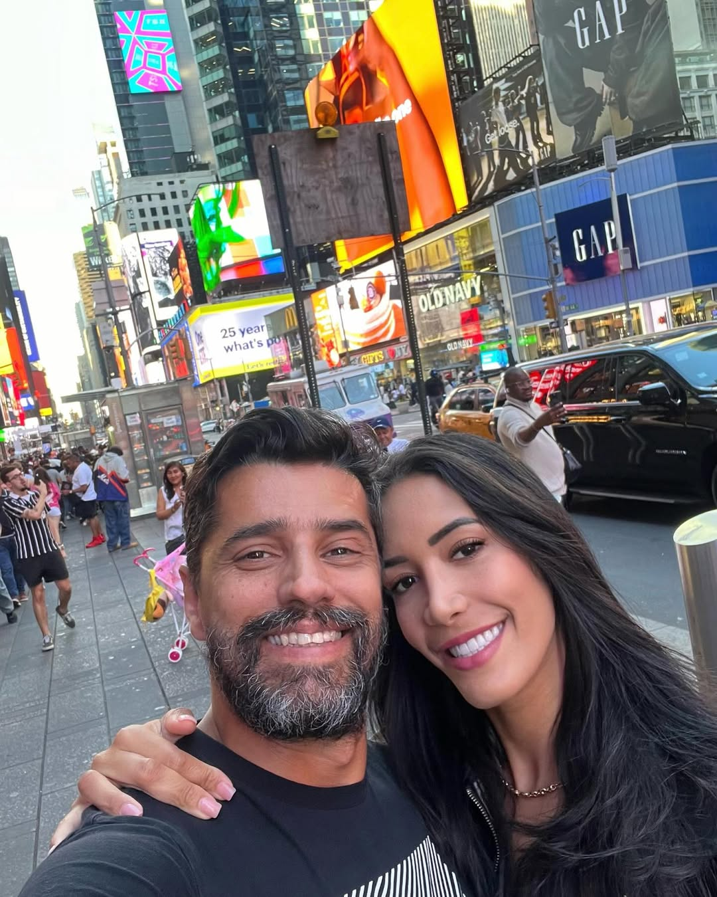
Crédito: Imagem ilustrativa: caras.com.br
Ela afirmou ter se sentido invadida após a repercussão de uma discussão com Alberto Cowboy em um hotel.
A esposa de Alberto Cowboy se pronunciou após o vazamento e a repercussão de uma discussão conjugal ocorrida em um hotel. Ao falar sobre o episódio, ela afirmou que se sentiu invadida.
Alberto Cowboy também quebrou o silêncio após a divulgação da briga com a esposa. Ele declarou que a privacidade do casal foi invadida.
ID de aprovação: RXNwb3NhIGRlIEFsYmVy
Fontes: CNN Brasil / Globo / UOL / R7 / Midiamax
Link principal: CNN Brasil
Crédito da imagem: Imagem ilustrativa: caras.com.br
Origem da imagem: Imagem ilustrativa aprovada por revisao visual e escolhida fora das fontes da noticia.
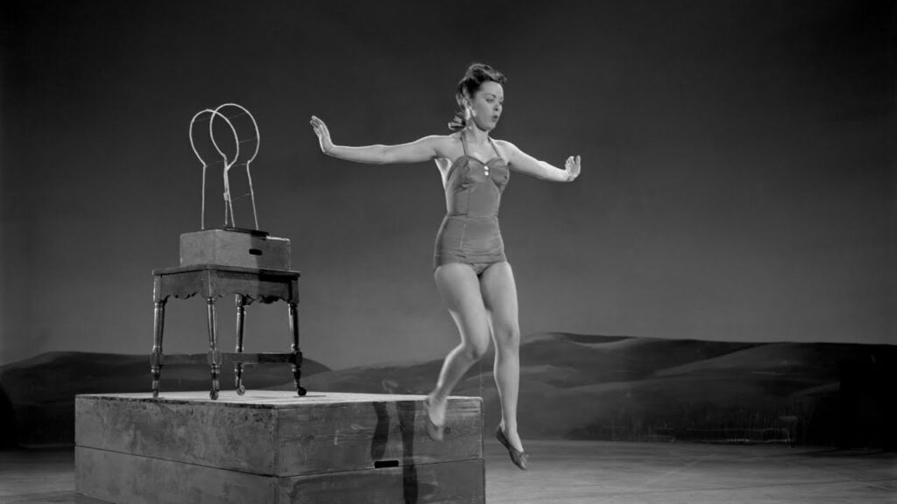
Crédito: Foto: Margaret Kerry
Atriz e dançarina inspirou a personagem Sininho, de “Peter Pan”.
Margaret Kerry morreu aos 97 anos. Atriz e dançarina, ela foi modelo para Sininho, de “Peter Pan”, e inspirou a personagem.
Nascida em 1929 e morta em 2026, Kerry também foi identificada como a intérprete original de Tinker Bell da Disney, nome em inglês da fada Sininho.
ID de aprovação: TWFyZ2FyZXQgS2Vycnkg
Fontes: Folha de S.Paulo / Omelete / AdoroCinema / Animation Magazine
Link principal: Folha de S.Paulo
Crédito da imagem: Foto: Margaret Kerry
Origem da imagem: Imagem ilustrativa aprovada por revisao visual e escolhida fora das fontes da noticia.
Jesse Eisenberg recusou interpretar Mark Zuckerberg na continuação, que terá Jeremy Strong no papel.
O diretor da sequência de “A Rede Social” passou três dias tentando convencer Jesse Eisenberg a voltar a interpretar Mark Zuckerberg. O ator, porém, recusou o papel na continuação.
Jeremy Strong aparece como Zuckerberg nas novas imagens e no teaser da produção. O elenco também inclui Mikey Madison. A sequência ganhou ainda um trailer.
ID de aprovação: QSBSZWRlIFNvY2lhbCAy
Fontes: Omelete / Globo.com / Folha de S.Paulo / Estadão
Link principal: Omelete
Crédito da imagem: Imagem pendente de revisão
Origem da imagem: Nenhuma candidata foi aprovada pela revisao visual automatica.